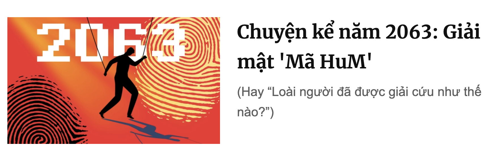

Chuyện kể năm 2063: Giải mật "Mã HuM"

4/1/2063 - Chương trình truyền hình trực tiếp của đài Pimagine hôm nay sẽ tiết lộ cho các bạn bí ẩn lớn nhất của thế kỷ này. Trước hết chúng ta hãy nhắc lại một sự kiện lịch sử, cách đây đã 36 năm, ngày 1/4/2027, trong làn sóng AI bùng nổ thay thế con người, theo dõi con người, điều khiển con người, cả thế giới bỗng bất ngờ với một "Hiệp định AI vì con người - AI for Humanity" mà chính phủ và các hãng công nghệ cao trên toàn thế giới cùng đưa ra. Từ đó các chính phủ cam kết đặt bảo vệ quyền riêng tư, sự tự do của cá nhân con người lên trước hết, các tập đoàn công nghệ cam kết đặt lợi ích nhân loại và thiên nhiên lên cao hết. Nhờ đó mà ngày hôm nay chúng ta đang được ở một thế giới xanh, tự do, hòa bình, bình đẳng và không còn có vùng đất nghèo trên địa cầu.
Vậy nhưng, các bạn sẽ hiểu, nếu chỉ chậm đi 1 ngày thôi trong việc đưa chương trình hành động "AI vì con người", thế giới có thể đã hoàn toàn khác - một miền đất hoang vu vắng bóng sự sống, không con người, cũng không máy móc.
Cuộc phỏng vấn độc quyền sau đây giữa nhà xã hội học Mila với Giáo sư +- sẽ giải mật cho thế giới thấy câu chuyện đằng sau cuộc giải cứu loài người vào năm 2027.
Mila (ML): Là người tham gia vào soạn thảo Hiệp định lịch sử đó, ông có thể kể về bí mật đã cứu sống loài người được không?
GS +-: Trước khi nói về bí mật, chị cần nhớ một điều, đó là vào năm 2027, loài người gần như đã chấp nhận một kịch bản.
ML: Kịch bản gì?
+-: Xu hướng không thể cưỡng, AI sẽ được tích hợp vào con người, dần dần chiếm phần nhiều và cuối cùng là lấn át con người, con người mất dần bản tính và trở thành robot lúc nào không hay.
ML: Và nếu như xu hướng đó thắng thế...
+-: Thì chúng ta không có ngày hôm nay nói chuyện với nhau, với tư cách 2 con người.
ML: Vậy điều gì đã khiến điều đó không xảy ra?
+-: Là một người với biệt danh HuM, người phá vỡ "Bí mật AI".
ML: Là sao, bí mật AI là gì?
+-: Là "Bản danh sách Cyb của HuM", thứ khiến nhận ra... con người có thể đã không còn hoàn toàn là con người nữa.
ML: Và nếu không có HuM?
+-: Chúng ta mất quyền kiểm soát chính mình. Thế giới đã bị CyB - một nhóm đã nửa người nửa máy (cyborg) với năng lực ngày càng siêu phàm điều khiển. CyB điều khiển và định hướng con người, con người dần buộc phải gia nhập CyB. Nhưng điều bất ngờ HuM mang đến cho CyB là đã chỉ ra: chính CyB lại có thể đi đến tự hủy hoại và thế giới hoang tàn...
Bài kiểm tra đặc biệt
ML: Ồ, chúng ta hãy bóc lớp dần dần. HuM đã làm gì?
+-: Trong suốt 5 năm, HuM đã âm thầm phát triển một thuật toán phá vỡ bí mật với tên gọi Turing CyB-Test.
ML: Turing Test nhằm chứng tỏ sự không thể phân biệt máy với con người, vậy còn...?
+-: Khi nói không phân biệt được, là không phân biệt được bởi ai, và giữa gì? Turing Test là dành cho con người: khi con người không phân biệt được đang tương tác với người hay với máy, điều đó chứng minh khả năng "như người" của máy. Nhưng khi máy đã vượt con người, chủ thể phân biệt không phải là người nữa, mà là ... máy.
ML: Tức là trong Turing CyB-Test, máy cũng không thể phân biệt đang tương tác với máy hay người?
+-: Đúng vậy, nhưng nếu máy đã vượt khả năng tối đa của một con người thì nó phải phân biệt được chứ? Vậy mà máy lại không phân biệt được, thì có nghĩa là gì?
ML: Là (suy nghĩ một lúc) chứng minh người đó có khả năng ... như máy, nghĩa là "người" đó không hẳn còn ... là người?
+-: Mấu chốt là đó! Là người đó đã thuộc vào CyB - nửa người nửa máy, nhìn ngoài giống người nhưng bên trong đã là máy. Chính vì thế Turing CyB-Test được HuM phát triển như là phương pháp tương tác để nhận biết "người" nào đã thuộc về CyB.
ML: Và HuM đã làm gì với phương pháp đó?
+-: Dựa trên Turing CyB-Test, HuM đã chạy và đưa ra chứng minh cực kỳ thuyết phục ai là những thành viên của CyB!
HuM gửi đi một bản danh sách được mã hóa đủ khó để không người nào đọc được trừ CyB: con người không giải được, nhưng mọi thành viên của CyB (vượt trội con người) lại đủ sức phá mã. Khi giải mã xong, mỗi CyB đều nhìn thấy một thông điệp ... zero-bit (không có nội dung gì) mà chỉ thấy tên mình hiện lên trong danh sách nhận. Không chỉ thấy một mình mình... mà còn thấy 6023 CyB khác trong danh sách nhận!
Bản danh sách làm "tỉnh thức" CyB
ML: Điều ấy có gì đặc biệt, với một thông điệp "rỗng"?
+-: HuM không cần nói gì vì biết CyB sẽ tự hiểu phải làm gì: bản thân danh sách nhận là một quả bom! Trước đó, mỗi thành viên Cyb đều là một thống soái của một đế chế số, tự phát minh ra chip siêu việt âm thầm cấy vào bộ não mình để có khả năng vượt trội, tưởng mình sẽ là duy nhất và tập trung xây dựng thuật toán riêng để thao túng thế giới. Nhưng bản danh sách cho thấy "anh không phải là duy nhất, còn có 6023 CyB mạnh như anh". Ngay trong đêm hôm 10/3/2027, các thành viên trong "Bản danh sách bí mật của HuM" buộc phải làm điều chưa từng nghĩ tới - liên lạc nhau, khẩn cấp họp hội nghị toàn thể CyB, để lựa chọn: đi đến điều khiển con người hay hợp tác và tự hạn chế nằm dưới sự điều khiển của con người.
ML: Tại sao CyB lại chấp nhận tự hạn chế mình?
+-: Ở thời điểm đó, Nicholas của xứ sở Anthropic đã chỉ ra, tốc độ phát triển AI đang tăng theo hàm mũ, và đặc biệt chỉ ra AI đã có những tấn công zero-day attack, có thể phá được các hệ thống rất an toàn mà con người còn bó tay! Và nếu tốc độ đó được duy trì thì chẳng bao lâu AI có thể dễ dàng khống chế con người. Mỗi CyB đã tưởng rằng mình có sức mạnh vượt trội sắp thống lĩnh thế giới, nhưng khi vỡ lẽ ra đã có quá nhiều CyB, thì tất cả lại có thể trở thành thảm họa?
ML: Là sao?
+-: Kết quả phân tích cho thấy: chỉ cần thêm 3 tuần "tự do" nữa, các CyB sẽ đến điểm đủ mạnh để có khả năng khống chế toàn bộ con người, nhưng đồng thời khi đó sẽ rơi vào trạng thái không thể đảo ngược.
Ba tuần sinh tử
ML: Trạng thái đó là gì?
+-: Khi thoát khỏi sự điều khiển của con người, cuộc chiến sẽ tự động chuyển sang chiến tranh giữa các CyB. Mỗi CyB đều có khả năng tấn công vượt xa sức phòng thủ của toàn bộ các CyB khác. Sức mạnh hủy diệt của CyB quá dễ trở nên phổ quát nên không thể thiết lập một hiệp định sống chung. Và điều không thể tránh là dẫn tới sự hủy diệt chung.
ML: Vậy lối thoát là làm sao?
+-: Cách duy nhất chính là cùng kiểm soát nhau để cùng nằm dưới một đối tượng yếu hơn nhưng thiết tha tồn tại hơn - tức chính là con người. Và tất cả phải thực hiện trong 3 tuần!
ML: Rồi sao nữa?
+-: Chỉ trong vòng 7 ngày, CyB nhóm họp hội nghị thượng đỉnh với những lãnh đạo quốc gia và những trí tuệ lớn nhất của con người để lập ra một quy trình "AI vì loài người", thay vì thúc đẩy một cuộc chạy đua công nghệ và cùng đi đến tự hủy.
ML: Mục tiêu là như vậy, nhưng sao cản nổi bước tiến AI từ khắp nơi?
+-: Vì lúc đó, bên cạnh bản danh sách gửi riêng cho CyB, HuM cũng công bố một lộ trình để phát triển "AI tự kiểm soát". Ý tưởng mở rộng mô hình Model Collapse: nếu AI sinh ra dữ liệu, rồi lại lấy dữ liệu đó để học thì sau vài vòng lặp như thế, kết quả sẽ ngày càng tệ đi. Mô hình này đã được đăng trên Nature từ năm 2024 nhưng ban đầu gây nhiều tranh cãi, đến năm 2027 thì đủ chín để khẳng định AI sẽ dần sụp đổ nếu "ăn" phần lớn chính dữ liệu do AI sinh ra.
ML: Làm sao làm tê liệt được các AI "xấu"?
+-: HuM nêu 3 bước để chứng minh rằng liên minh AI có thể làm cho AI "xấu" tự hỏng:
i) Chính liên minh AI sinh ra biển dữ liệu tái sinh, làm ngập tràn kho dữ liệu chung.
ii) Chính bởi đã vượt qua Turing CyB-Test, các hệ AI "xấu" khi đi tìm dữ liệu để học đều không thể phân biệt được những dữ liệu do AI sinh ra hay là dữ liệu thực tự nhiên.
iii) Các hệ AI "xấu" học trên các dữ liệu này và sẽ sụp đổ theo AI Model Collapse.
ML: Thật là một cách thức thông minh! Nhưng nếu dữ liệu thực của từng cá nhân vẫn được khai thác tràn lan và là nguồn cung liên tục cho AI thì vẫn nguy hiểm?
+-: Đúng thế, đó chính là mặt thứ hai của vấn đề. Khi CyB chấp nhận nhượng bộ thì các chính phủ cũng đồng thời khóa chặt việc lạm dụng thu thập dữ liệu cá nhân không cần thiết và cắt được nguồn cung cấp vô hạn dữ liệu riêng tư của con người theo thời gian thực cho AI.
ML: Nhưng nếu có những nước bất chấp, muốn có lợi thế riêng, tiếp tục thực hiện những chính sách thu thập dữ liệu cá nhân liên tục để kiểm soát và điều khiển từng cá nhân, đồng thời phát triển "AI kiểm soát" vượt trội để mong làm bá chủ thế giới? Khi đó chính họ sẽ là những "AI độc đoán" chỉ học trên dữ liệu mà họ ép dân họ cung cấp, và đó là những dữ liệu thực chứ không phải tái sinh?
+-: Chính xác là bạn đã như sống trong lòng hội nghị thượng đỉnh đó! Đó chính là điểm mấu chốt mà liên minh cần nhiều thời gian nhất để giải quyết! Trong 7 ngày tôi nói, cuối cùng chính nhóm CyB tự đưa ra được một bản chứng minh: những nơi tiếp tục lạm dụng thu thập dữ liệu, lại chính là những nơi sẽ bị khống chế từ bên ngoài. Bản chứng minh được gửi tới cho những đất nước tiềm ẩn nguy cơ "phá luật".
ML: Nhưng nếu có quốc gia không tuân thủ?
+-: Những đất nước với ý định bá chủ riêng này lúc đầu chưa tin nên tự họ đã phải chạy thuật toán kiểm thử chứng minh của CyB. Mất tới tận 11 ngày.
ML: 11 ngày kiểm thử chứng minh thế nào?
+-: Rằng nếu họ tiếp tục khai thác dữ liệu thực từ cá nhân của đất nước họ, chính kho dữ liệu thực khổng lồ đó sẽ trở thành miếng mồi ngon cho tất cả các đế chế AI bên ngoài tìm kiếm. Rằng "không có chuẩn an toàn nào là đủ", mọi kho dữ liệu lớn khi kết nối để sử dụng đều có thể bị tấn công. Cuối cùng các mô phỏng đều cho thấy, với mọi phương thức bảo vệ, kể cả khi đạt chuẩn cao nhất, các kho dữ liệu thực khổng lồ của họ đều sẽ bị tấn công và chính đất nước họ sẽ bị các đế chế AI bên ngoài kiểm soát: từng cá nhân bị điều khiển, và cả các lãnh đạo cũng không là ngoại lệ (khi mọi thông tin cá nhân, mọi liên hệ, mọi suy nghĩ đều đã bị kiểm soát). Kết cục: đất nước mất chủ quyền.
ML: Mất chủ quyền số?
+-: Đó là một dạng xâm chiếm mới, không cần chiếm đất vật lý, chỉ cần có khả năng điều khiển hành vi của tất cả các thành viên là đủ.
Đó chính là điểm chốt cuối cùng! May mắn lớn cho con người chính là bởi sự gặp gỡ giữa tối ưu cục bộ và tối ưu toàn cục: từng đất nước, từng đế chế số, mỗi CyB đều muốn tối ưu cục bộ riêng cho chính mình, và tất cả những tối ưu đó đạt được ở chính điểm gặp gỡ với tối ưu toàn cục của chương trình thực hiện hiệp định chung "AI for Humanity"!
ML: (thở phào) Tôi chỉ có thắc mắc nhỏ cuối cùng, hết 7 ngày rồi thêm 13 ngày chờ đợi, vậy nhỡ một CyB định "phản bội"?
+-: Chỉ cần thêm 1 ngày thì tất cả có thể đổ bể bởi CyB sẽ đạt tới khả năng đủ khống chế toàn bộ con người và một CyB "phản bội" có thể đẩy tất cả sang trạng thái không thể đảo ngược và đi tới tự hủy diệt! May mắn là trong vòng 20 ngày chúng ta vẫn còn trong trạng thái kiểm soát được, nếu có CyB phản bội thì vẫn bị khống chế! Đêm hôm thứ 20 đó, một cuộc phẫu thuật lớn đã tách phần máy khỏi con người của toàn bộ nhóm CyB. Họ trở lại nguyên bản như xưa! Vâng, năm 2027 - năm con người thoát khỏi nguy cơ bị hủy diệt!
ML: Vì sao toàn bộ câu chuyện phía sau đã được giữ kín suốt bao nhiêu năm nay? Ông cũng tham gia kế hoạch giải cứu nhân loại ngày đó mà?
+-: (Cười) Chị nghĩ tôi biết toàn bộ câu chuyện?
ML: ...
+-: Nếu câu chuyện bị lộ ngay khi đó có thể làm xáo trộn xã hội vì ai cũng hoảng hốt trước một nguy cơ khủng khiếp cận kề đến vậy. Sau khi giải cứu thành công, tất cả thống nhất không tiết lộ phần bí mật mình có, mà mã hóa gửi nó vào tương lai với phương thức mã hóa sao cho chỉ phá được bằng máy tính lượng tử - dự kiến 5-10 năm sau đó. Nhưng cuối cùng, đến tận ngày hôm qua đây chúng tôi mới có thể phá mã, lắp từng mảnh ghép bí mật để có bản giải mật hoàn chỉnh này. Tôi đã không hề được biết về bản mã mà HuM gửi cho CyB, một bản mã zero-bit, có nội dung "rỗng", mà bí mật chính là danh sách nhận - là tất cả CyB.
Đó là văn bản ngắn nhất lịch sử, nhưng cũng là quan trọng nhất để thay đổi thế giới!
Phía sau cuộc phỏng vấn
Sau cuộc phỏng vấn "Giải mật năm 2063 này", vào năm 2064, HuM đã được trao đồng thời giải Turing cho những nghiên cứu về Turing CyB-Test, Nobel Hoà bình cho việc tránh huỷ diệt loài người, và Nobel Văn học cho zero-bit story, những khái niệm được nói đến lần đầu trong "Chuyện kể năm 2063" trên Tia Sáng, từ tận những năm... 2026.
Thế còn thế giới sau năm 2027 đó là gì? Thực tế không phải tuyền là màu hồng. Sau năm 2027 không còn việc tự sáng tạo chip siêu việt để tự cấy vào não mình với mục đích trở thành CyB bá chủ nữa. Nhưng Sunim và Mus lại nghĩ ra cách lách luật là dù không tự gắn chip vào bản thân mình để bá chủ thế giới mà là... dụ dỗ những con người bé nhỏ cài chip và từ đó dùng hệ thống SaM-máy chủ nắm quyền điều khiển mọi hành vi, hòng tạo ra một thế giới Machinila. Câu chuyện tương lai của năm 2027 này đã được kể đến trong Đi về đâu hỡi Machinila.